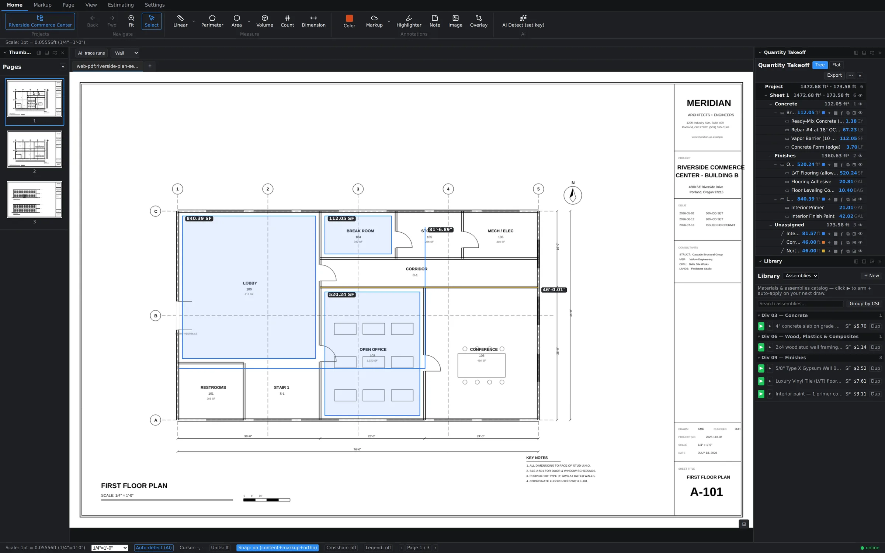
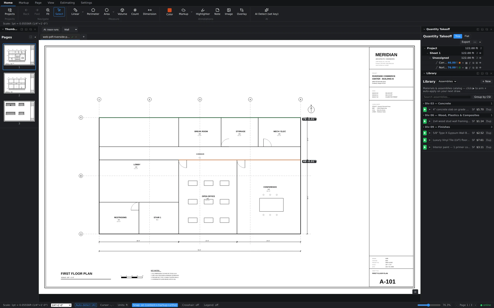
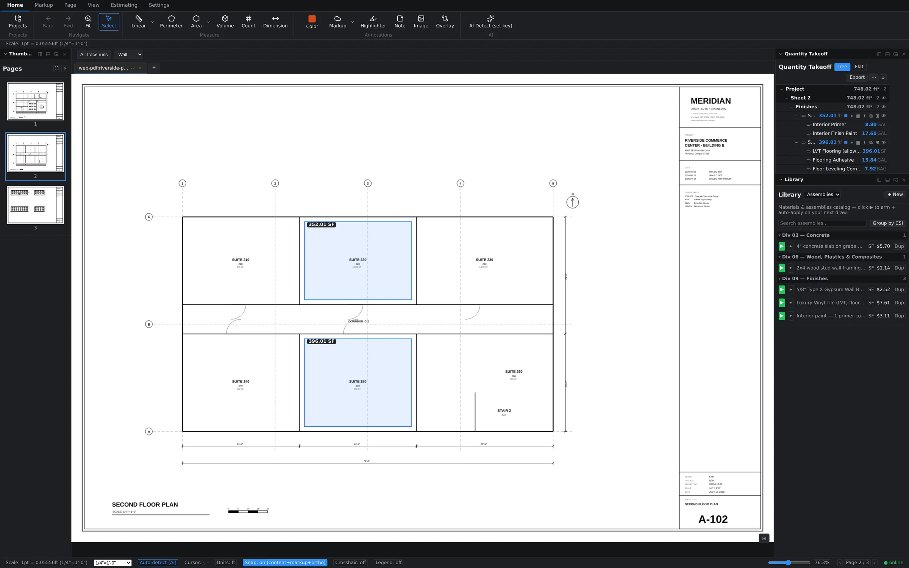
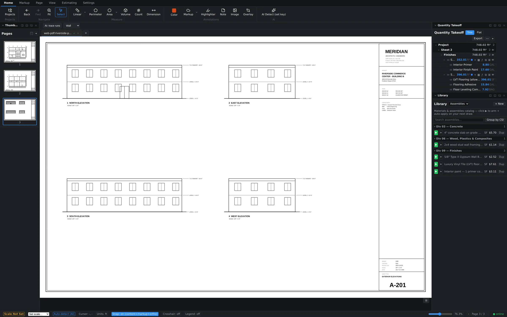

Features
A full estimating bench.
A full estimating bench.
In one window.
Six ribbon tabs. Thirteen panels. One price. Here's everything Groundwork Takeoff does — organized the way the app is.

Six ribbon tabs. Thirteen panels. One price. Here's everything Groundwork Takeoff does — organized the way the app is.
Linear for runs and edges. Perimeter for closed boundaries. Area for surfaces. Volume for depth-loaded quantities. Count for everything that repeats. Dimension for callouts your reviewers can read.
(24*3)+8, unit-aware

Most takeoff tools stop at quantities and hand you a spreadsheet problem. Groundwork carries the takeoff all the way to dollars — in the same window, on the same sheet.

Our AI proposes; you dispose. Every AI suggestion lands as a reviewable object you accept or reject — because a bid with your name on it should never contain a measurement nobody looked at.

Plan Compare overlays revision B on the live canvas — not a flattened throwaway PDF. Removed ink turns red, added ink turns blue, unchanged ink goes dark. Re-measure the deltas immediately, on the same screen.

Revision deltas, clouds, stamps, signatures — the whole review vocabulary, plus a Tool Chest that turns any markup you make into a reusable tool for the whole team.

Every panel docks left, right, or bottom — or floats free on a second monitor. The app remembers your arrangement.
| Panel | What it does |
|---|---|
| Takeoff | Quantity tree and flat views, grouped by assembly or sheet, with export |
| Estimate | Live estimate grid — quantities × costs, always current |
| Library | Materials & assemblies catalog; arm to auto-apply on next draw |
| Assemblies | Assembly library and builder |
| Tool Chest | Reusable markup tools shared across the team |
| Markups | Every markup on the sheet, filterable, jump-to-click |
| Layers | Layer visibility control |
| Thumbnails | Page navigation across the whole set |
| Bookmarks | Saved sheet locations — jump straight to the detail you need |
| Revision Log | Who changed what, when |
| Color Legend | Color → meaning map, printable for reviewers |
| Attachments | Specs, cut sheets, photos — attached to the project |
| Notes | Sheet-level notes for the next person in |
Insert, delete, rotate, reorder. Edit text directly on the sheet. Print selected sheets.
Shrink 400 MB scan sets to something emailable; export archival PDF/A for closeout.
Word, Excel, and PowerPoint files convert to PDF inside the app — specs and takeoffs in one set.
Export PDF with markups burned in or separated, export markup summaries, batch export data across sheets.
Local-first storage with cloud sync. The amber indicator tells you you're offline; your work doesn't care.
Same six measurement modes, armed with your trade's assemblies. Pick yours.

(24*3)+8 in any quantity field


Snap-to-drawing vertices, smart scale detection, and a formula evaluator mean the number on the sheet is the number in the bid.
Single-letter tool shortcuts, armed assemblies that auto-apply, and AI Detect for everything repetitive. Draw once; the estimate builds itself.
Every quantity links to its measurement on the sheet. Click a line item, see exactly where it came from. Revision Log records who changed what.
Plan-compare overlay paints removals red and additions blue on the live canvas; revision clouds and deltas document them. Addendum 3 becomes a ten-minute task, not a re-takeoff.
No exporting quantities to a second program to price them. Takeoff, assemblies, estimate grid, and Excel export live in the same workspace — office and field, live.
Upload a real plan set and measure something in the first five minutes.